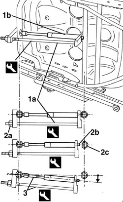
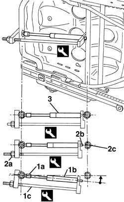

7045A60 front seat lift device - r r
- Path
- Procedures > 70 FITTINGS > 7045 FRONT SEATS > 7045A front seat assembly > 7045A60 front seat lift device - r r
- Kind
- repair procedure (removal / refitting; the operation number is the code)
- Applies to
- all engines; all production periods
- Interactive page
- https://sloeber94.github.io/elrnDB-a156/en/#/3238874
Applies to: all engines; all production periods
 Removing
Removing
 Refitting
Refitting7045A10 l/h or r/h front seat (one) - r+r
Lift the seat completely.
1. Install the proper tool (1a) on the gas ring (1b) device as shown in the figure.
 | Name | Country |
|---|---|---|
1a | Tool | 1.870.666.000 |
2. Screw the nut of the tool (2a) ( compress the gas ring) so as to remove the pin (2b) of the gas ring from its seat (2c) in the tubolar.
While screwing the nut keep the tool in position.
3. Wheel the tool group with gas ring as much as necessary then screw the nut of the tool so as to remove the gas ring completely

Applies to: all engines; all production periods
Refitting
RemovingMake sure that the gas ring device is not damaged and that it provides a proper loading.
1. Place the head (1a) of the gas ring device (1b) into its proper seat in the tubolar, then install the proper tool (1c) as shown in the figure.
| Name | Country |
|---|---|---|
1c | Tool | 1.870.666.000 |
2. Screw the nut (2a) of the tool (compress the gas ring) so as to match the pin (2b) of the device with its seat (2c) in the tubolar.
While screwing the nut keep the tool in position.
3. Unscrew the nut of the tool so as to install into its seat the gas ring device completely.

Applies to: all engines; all production periods
7045A10 l/h or r/h front seat (one) - r+r
Check the functioning of the device.
Topics linked from this page (1)
Topics that link to this page (5)
- O05 FRONT SEAT HEIGHT ADJUSTMENT NOT WORKING
- S65 SEATS CREAKING
- 7045A62 joints of driver`s side front seat lift device - r r with seat disconnected
- 7045A80 front seat cushion squab (outer) joint assembly - r r with seat removed
- 7045A82 front seat cushion/squab (interior) joint assembly - r r with seat removed